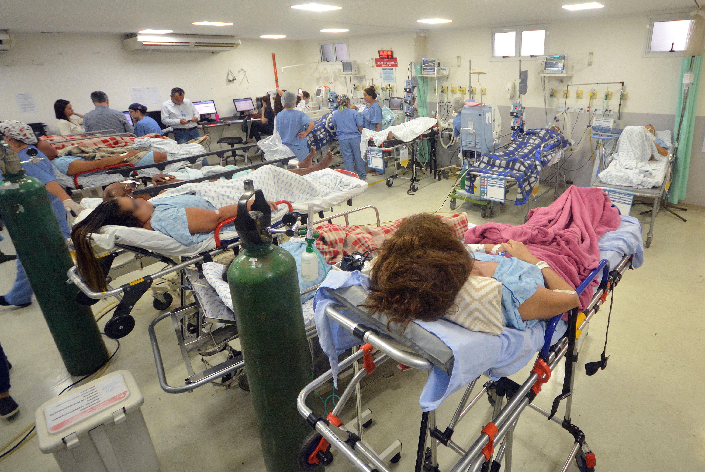
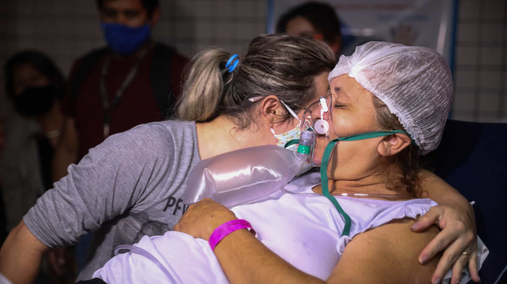

Um pronto-socorro superlotado é um sinal de que alguma parte do hospital está operando no limite ou acima da capacidade. Segundo um estudo recente da AHA, a maioria dos prontos-socorros dos hospitais – 62% – está operando nessas condições.
Quanto às consequências da superlotação, o aumento na mortalidade de pacientes, atraso nos transportes, desvio de ambulâncias a outras unidades de atenção, fuga de pacientes e maior gasto financeiro têm sido os episódios mais relatados na literatura.
Entre as ferramentas tecnológicas que são importantes para realizar a gestão hospitalar estão as plataformas de comunicação, os softwares, os aplicativos e até mesmo as soluções em telecom. Os dispositivos móveis (tablets e smartphones) já fazem parte da rotina hospitalar.
Tecnologia na saúde pública
Prontuário eletrônico;
Telemedicina;
Sistemas de gestão;
Aplicativos;
Ferramentas de biometria;
Câmeras de monitoramento;
Cloud computing;
Testes Laboratoriais Remotos (TLRs).